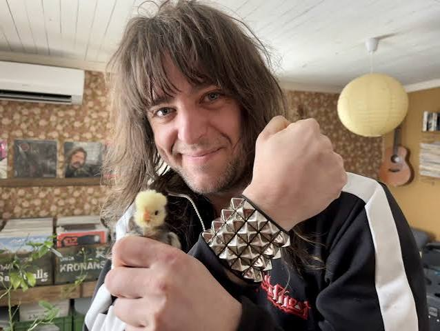

-Salle Braman
Salle är bandets frontfigur och en av de främsta låtskrivarna. Med sin kraftfulla röst och sitt självsäkra scenspråk ger han Stars of Heaven mycket av dess identitet. Han har alltid drivits av drömmen att spela inför tusentals människor.Salle Braman är en av grundarna av Stars of Heaven och bandets främsta frontfigur. Han föddes 1994 i Jönköping och började intressera sig för musik redan som barn. Inspirerad av klassisk hårdrock drömde han tidigt om att stå på stora scener och skriva musik som människor skulle minnas.
När Salle träffade Olo Olofsson och Hampus Henriksson började de tre vännerna spela tillsammans. Salle tog snabbt rollen som sångare och gitarrist, och blev en viktig del av bandets musikaliska identitet. Under bandets första år skrev han många av texterna, ofta inspirerade av personliga erfarenheter, drömmar och känslan av att vilja ta sig bortom vardagen.
På scenen är Salle känd för sin intensiva energi och kraftfulla röst. Utanför scenen är han däremot mer eftertänksam och lägger mycket tid på att utveckla nya låtidéer. Han är också känd för att vara envis när det gäller musiken och vill att varje låt ska ha sin egen identitet.
-Olof Oloffson
Olof är bandets gitarrist och ansvarar för många av de tunga riffen och melodiska solona. Hans musikaliska stil kombinerar klassisk hårdrock med ett mer modernt sound. Han är känd inom bandet för sin kreativitet och sin vilja att ständigt utveckla musiken.Olo Olofsson föddes 1995 i Jönköping och är bandets gitarrist. Hans intresse för musik började när han upptäckte hur mycket kraft och känsla en elektrisk gitarr kunde förmedla. Redan som tolvåring började han experimentera med egna gitarriff och försökte efterlikna sina favoritgitarrister.
När Stars of Heaven bildades 2012 blev Olo ansvarig för många av bandets tyngsta riff och melodiska gitarrsolon. Hans spelstil kombinerar klassisk heavy metal med melodiska inslag, vilket har blivit en viktig del av bandets sound. Han gillar att testa nya ljud och effekter för att ge musiken en unik karaktär.
Till skillnad från Salle är Olo relativt lugn och tillbakadragen. Han föredrar ofta att arbeta i studion och finslipa detaljer tills allt låter precis rätt. Samtidigt kan han vara mycket intensiv under konserter, där hans gitarrsolon ofta blir några av publikens favoritögonblick.
Olo har genom åren blivit en av bandets viktigaste kreativa krafter. Han samarbetar nära med Salle när nya låtar skrivs och försöker alltid hitta melodier som gör att musiken fastnar hos lyssnaren.
-Hampus Henriksson
Hampus är bandets trummis och den som håller ihop musiken med kraftfulla rytmer och explosiva trumsolon. Sedan de första spelningarna på hustak har han varit en viktig del av bandets energi och sammanhållning.Hampus Henriksson föddes 1994 i Jönköping och är Stars of Heavens trummis. Han började spela trummor redan som nioåring och fastnade snabbt för instrumentets energi och rytm. För honom handlade musik alltid om mer än bara ljud – det handlade om känslan av att spela tillsammans och skapa något som kunde få en hel publik att röra sig.
När Hampus började spela med Salle och Olo blev han bandets rytmiska grund. Hans kraftfulla trumspel gav de tidiga låtarna en tyngd som hjälpte till att forma Stars of Heavens hårdare sound. Under deras första spelningar på hustak och mindre scener lärde han sig att anpassa sitt spel efter både omgivningen och resten av bandet.
Hampus är den mest spontana och energiska medlemmen. Han gillar att experimentera med rytmer och lägga till oväntade trumövergångar i låtarna. Han bidrar också ofta med humor under repetitioner och hjälper till att hålla stämningen uppe när arbetet i studion blir krävande.
Trots sin avslappnade personlighet tar Hampus musiken på stort allvar. Han anser att trummorna inte bara ska hålla takten, utan också bygga upp spänning och förstärka känslan i varje låt. Hans spelstil har utvecklats tillsammans med bandet och blivit allt mer varierad genom åren.
